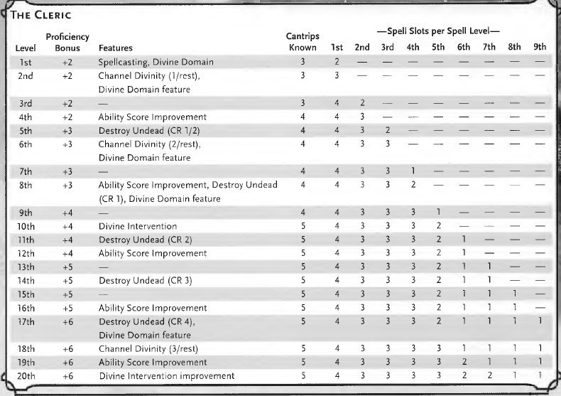

Cleric:
General Characteristics:
Priestly champions who wield divine magic in service of a higher power
Intermediaries between the mortal world and the distant planes of the gods
Combine healing and inspiring magic with spells that harm and hinder foes
Can provoke awe and dread, lay curses, call down flames, and wade into melee
Choose a Divine Domain at 1st level that shapes their entire identity and power

Class Features
H i t P o i n t s
Hit Dice: 1d8 per cleric level
1st Level: 8 + your Constitution modifier
Higher Levels: 1d8 + your Constitution modifier after every level
P r o f i c i e n c i e s
Armor: Light armor, medium armor, shields
Weapons: All simple weapons
Saving Throws: Wisdom, Charisma
Skills: Choose two from History, Insight, Medicine, Persuasion, and Religion
Starting Equipment:
• (a) a mace or (b) a warhammer (if proficient)
• (a) scale mail, (b) leather armor, or (c) chain mail (if proficient)
• (a) a light crossbow and 20 bolts or (b) any simple weapon
• (a) a priest's pack or (b) an explorer's pack
• A shield and a holy symbol
Leveling:

S p e l l c a s t i n g - Wisdom is your spellcasting ability. You know 3 cantrips at 1st level. You prepare a number of cleric spells equal to your Wisdom modifier + cleric level (minimum 1). You can change your prepared spells after each long rest (at least 1 minute per spell level spent in prayer). You can cast a prepared cleric spell as a ritual if it has the ritual tag. Use a holy symbol as a spellcasting focus.
Spell save DC = 8 + proficiency bonus + Wisdom modifier
Spell attack modifier = proficiency bonus + Wisdom modifier
D i v i n e D o m a i n - At 1st level, choose one domain: Knowledge, Life, Light, Nature, Tempest, Trickery, or War. Your choice grants domain spells (always prepared, don't count against your spell limit), Channel Divinity options, and features at 1st, 2nd, 6th, 8th, and 17th levels.
C h a n n e l D i v i n i t y - At 2nd level, channel divine energy directly from your deity to fuel magical effects. You start with Turn Undead and one effect determined by your domain. Choose which effect to use each time. Must then finish a short or long rest to use again. Two uses per rest at 6th level, three uses at 18th level.
• Turn Undead - As an action, present your holy symbol. Each undead that can see or hear you within 30 feet must make a Wisdom saving throw. On a failure, the creature is turned for 1 minute or until it takes any damage. A turned creature must spend its turns trying to move as far away from you as possible, can't willingly move within 30 feet of you, can't take reactions, and can only use the Dash action or try to escape restraints.
D e s t r o y U n d e a d - From 5th level, undead that fail their saving throw against Turn Undead are instantly destroyed if their challenge rating is at or below the threshold for your cleric level:
• 5th level: CR 1/2 or lower
• 8th level: CR 1 or lower
• 11th level: CR 2 or lower
• 14th level: CR 3 or lower
• 17th level: CR 4 or lower
D i v i n e I n t e r v e n t i o n - From 10th level, implore your deity's aid as an action. Describe the assistance you seek and roll percentile dice. If you roll equal to or lower than your cleric level, your deity intervenes (DM chooses the effect — any cleric spell or domain spell is appropriate). On a successful intervention, you can't use this feature again for 7 days. Otherwise, you can use it again after a long rest. At 20th level, the call for intervention succeeds automatically — no roll required.
— D I V I N E D O M A I N S —
K n o w l e d g e D o m a i n
Gods of knowledge — including Oghma, Boccob, Gilean, Aureon, and Thoth — value learning and understanding above all. Followers study esoteric lore, collect old tomes, and delve into the secret places of the earth. Some gods of knowledge also promote the practical knowledge of craft and invention.
Domain Spells (always prepared):
• 1st level: command, identify
• 3rd level: augury, suggestion
• 5th level: nondetection, speak with dead
• 7th level: arcane eye, confusion
• 9th level: legend lore, scrying
Blessings of Knowledge - At 1st level, you learn two languages of your choice. You also become proficient in your choice of two of the following skills: Arcana, History, Nature, or Religion. Your proficiency bonus is doubled for any ability check you make using either of those skills.
Channel Divinity: Knowledge of the Ages - From 2nd level, as an action, choose one skill or tool. For 10 minutes, you have proficiency with the chosen skill or tool.
Channel Divinity: Read Thoughts - From 6th level, as an action, choose one creature you can see within 60 feet. That creature must make a Wisdom saving throw. On a failure, you can read its surface thoughts (those foremost in its mind, reflecting its current emotions and what it is actively thinking about) while it is within 60 feet of you. This lasts for 1 minute. During that time, you can use your action to end this effect and cast the suggestion spell on the creature without expending a spell slot — the target automatically fails its saving throw against the spell. On a success, you can't use this feature on that creature again until you finish a long rest.
Potent Spellcasting - From 8th level, add your Wisdom modifier to the damage you deal with any cleric cantrip.
Visions of the Past - From 17th level, spend at least 1 minute in meditation and prayer to receive dreamlike, shadowy glimpses of recent events. You can meditate for a number of minutes equal to your Wisdom score (requires concentration). Once used, can't use again until a short or long rest.
• Object Reading: Holding an object, after 1 minute of meditation you learn how the owner acquired and lost it, and the most recent significant event involving that owner. Spend 1 additional minute per previous owner to learn the same information about them (going back a number of days equal to your Wisdom score).
• Area Reading: You see visions of recent events in your immediate vicinity (up to a 50-foot cube), going back a number of days equal to your Wisdom score. For each minute you meditate, you learn about one significant event, beginning with the most recent.
L i f e D o m a i n
The Life domain focuses on the vibrant positive energy that sustains all life. Gods of life promote vitality and health through healing the sick and wounded, caring for those in need, and driving away the forces of death and undeath. Almost any non-evil deity can claim this domain, particularly agricultural deities, sun gods, gods of healing or endurance, and gods of home and community.
Domain Spells (always prepared):
• 1st level: bless, cure wounds
• 3rd level: lesser restoration, spiritual weapon
• 5th level: beacon of hope, revivify
• 7th level: death ward, guardian of faith
• 9th level: mass cure wounds, raise dead
Bonus Proficiency - At 1st level, you gain proficiency with heavy armor.
Disciple of Life - Also at 1st level, your healing spells are more effective. Whenever you use a spell of 1st level or higher to restore hit points to a creature, the creature regains additional hit points equal to 2 + the spell's level.
Channel Divinity: Preserve Life - From 2nd level, as an action, present your holy symbol and evoke healing energy that can restore a number of hit points equal to five times your cleric level. Choose any creatures within 30 feet and divide those hit points among them. This feature can restore a creature to no more than half of its hit point maximum. Can't be used on undead or constructs.
Blessed Healer - From 6th level, the healing spells you cast on others also heal you. When you cast a spell of 1st level or higher that restores hit points to a creature other than yourself, you regain hit points equal to 2 + the spell's level.
Divine Strike - From 8th level, once on each of your turns when you hit a creature with a weapon attack, you can cause the attack to deal an extra 1d8 radiant damage. Increases to 2d8 at 14th level.
Supreme Healing - From 17th level, when you would normally roll one or more dice to restore hit points with a spell, you instead use the highest number possible for each die. For example, instead of restoring 2d6 hit points, you restore 12.
L i g h t D o m a i n
Gods of light — including Helm, Lathander, Pholtus, Branchala, the Silver Flame, Belenus, Apollo, and Re-Horakhty — promote the ideals of rebirth and renewal, truth, vigilance, and beauty. Clerics of this domain are enlightened souls infused with radiance, charged with chasing away lies and burning away darkness.
Domain Spells (always prepared):
• 1st level: burning hands, faerie fire
• 3rd level: flaming sphere, scorching ray
• 5th level: daylight, fireball
• 7th level: guardian of faith, wall of fire
• 9th level: flame strike, scrying
Bonus Cantrip - At 1st level, you gain the light cantrip if you don't already know it.
Warding Flare - Also at 1st level, when you are attacked by a creature within 30 feet of you that you can see, you can use your reaction to impose disadvantage on the attack roll, causing light to flare before the attacker. An attacker that can't be blinded is immune. Uses equal to your Wisdom modifier (minimum once) per long rest.
Channel Divinity: Radiance of the Dawn - From 2nd level, as an action, present your holy symbol. Any magical darkness within 30 feet of you is dispelled. Each hostile creature within 30 feet must make a Constitution saving throw, taking 2d10 + cleric level radiant damage on a failure, and half as much on a success. Creatures with total cover from you are not affected.
Improved Flare - From 6th level, you can also use your Warding Flare reaction when a creature that you can see within 30 feet of you attacks a creature other than you.
Potent Spellcasting - From 8th level, add your Wisdom modifier to the damage you deal with any cleric cantrip.
Corona of Light - From 17th level, as an action, activate an aura of sunlight that lasts for 1 minute or until dismissed (another action). You emit bright light in a 60-foot radius and dim light 30 feet beyond that. Your enemies in the bright light have disadvantage on saving throws against any spell that deals fire or radiant damage.
N a t u r e D o m a i n
Gods of nature are as varied as the natural world itself — from inscrutable gods of deep forests (such as Silvanus, Obad-Hai, Chislev, Balinor, and Pan) to friendly deities associated with particular springs and groves (such as Eldath). Nature clerics are champions who take an active role in advancing the interests of their nature deity — hunting evil monstrosities, blessing harvests, or withering the crops of those who anger their gods.
Domain Spells (always prepared):
• 1st level: animal friendship, speak with animals
• 3rd level: barkskin, spike growth
• 5th level: plant growth, wind wall
• 7th level: dominate beast, grasping vine
• 9th level: insect plague, tree stride
Acolyte of Nature - At 1st level, you learn one druid cantrip of your choice. You also gain proficiency in one of the following skills: Animal Handling, Nature, or Survival.
Bonus Proficiency - Also at 1st level, you gain proficiency with heavy armor.
Channel Divinity: Charm Animals and Plants - From 2nd level, as an action, present your holy symbol and invoke the name of your deity. Each beast or plant creature that can see you within 30 feet must make a Wisdom saving throw. On a failure, the creature is charmed by you for 1 minute or until it takes damage. While charmed, it is friendly to you and other creatures you designate.
Dampen Elements - From 6th level, when you or a creature within 30 feet of you takes acid, cold, fire, lightning, or thunder damage, you can use your reaction to grant that creature resistance to that instance of the damage.
Divine Strike - From 8th level, once on each of your turns when you hit a creature with a weapon attack, you can cause the attack to deal an extra 1d8 cold, fire, or lightning damage (your choice). Increases to 2d8 at 14th level.
Master of Nature - From 17th level, you can command animals and plant creatures. While creatures are charmed by your Charm Animals and Plants feature, you can take a bonus action on your turn to verbally command what each of those creatures will do on its next turn.
T e m p e s t D o m a i n
Gods whose portfolios include the Tempest domain — including Talos, Umberlee, Kord, Zeboim, the Devourer, Zeus, and Thor — govern storms, sea, and sky. They include gods of lightning and thunder, gods of earthquakes, some fire gods, and certain gods of violence, physical strength, and courage. Tempest clerics are sent to inspire fear in the common folk or to encourage offerings of propitiation to ward off divine wrath.
Domain Spells (always prepared):
• 1st level: fog cloud, thunderwave
• 3rd level: gust of wind, shatter
• 5th level: call lightning, sleet storm
• 7th level: control water, ice storm
• 9th level: destructive wave, insect plague
Bonus Proficiencies - At 1st level, you gain proficiency with martial weapons and heavy armor.
Wrath of the Storm - Also at 1st level, when a creature within 5 feet of you that you can see hits you with an attack, you can use your reaction to cause the creature to make a Dexterity saving throw. The creature takes 2d8 lightning or thunder damage (your choice) on a failed save, and half as much on a success. Uses equal to your Wisdom modifier (minimum once) per long rest.
Channel Divinity: Destructive Wrath - From 2nd level, when you roll lightning or thunder damage, you can use your Channel Divinity to deal maximum damage instead of rolling.
Thunderbolt Strike - From 6th level, when you deal lightning damage to a Large or smaller creature, you can also push it up to 10 feet away from you.
Divine Strike - From 8th level, once on each of your turns when you hit a creature with a weapon attack, you can cause the attack to deal an extra 1d8 thunder damage. Increases to 2d8 at 14th level.
Stormborn - From 17th level, you have a flying speed equal to your current walking speed whenever you are not underground or indoors.
T r i c k e r y D o m a i n
Gods of trickery — such as Tymora, Beshaba, Olidammara, the Traveler, Garl Glittergold, and Loki — are mischief-makers and instigators who stand as a constant challenge to the accepted order among both gods and mortals. They are patrons of thieves, scoundrels, gamblers, rebels, and liberators. Their clerics are a disruptive force in the world, puncturing pride, mocking tyrants, stealing from the rich, freeing captives, and flouting hollow traditions. They prefer subterfuge, pranks, deception, and theft rather than direct confrontation.
Domain Spells (always prepared):
• 1st level: charm person, disguise self
• 3rd level: mirror image, pass without trace
• 5th level: blink, dispel magic
• 7th level: dimension door, polymorph
• 9th level: dominate person, modify memory
Blessing of the Trickster - At 1st level, as an action, touch a willing creature other than yourself to give it advantage on Dexterity (Stealth) checks. This blessing lasts for 1 hour or until you use this feature again.
Channel Divinity: Invoke Duplicity - From 2nd level, as an action, create a perfect illusory duplicate of yourself that lasts for 1 minute (concentration). The illusion appears in an unoccupied space within 30 feet. As a bonus action, you can move the illusion up to 30 feet (must remain within 120 feet). You can cast spells as though you were in the illusion's space (using your own senses). While both you and the illusion are within 5 feet of a creature that can see the illusion, you have advantage on attack rolls against that creature.
Channel Divinity: Cloak of Shadows - From 6th level, as an action, become invisible until the end of your next turn. You become visible if you attack or cast a spell.
Divine Strike - From 8th level, once on each of your turns when you hit a creature with a weapon attack, you can cause the attack to deal an extra 1d8 poison damage. Increases to 2d8 at 14th level.
Improved Duplicity - From 17th level, you can create up to four duplicates of yourself instead of one when you use Invoke Duplicity. As a bonus action, you can move any number of them up to 30 feet (maximum range of 120 feet).
W a r D o m a i n
War has many manifestations. Gods of war — including champions of honor and chivalry (such as Torm, Heironeous, and Kiri-Jolith), gods of destruction and pillage (such as Erythnul, the Fury, Gruumsh, and Ares), and gods of conquest and domination (such as Bane, Hextor, and Maglubiyet) — watch over warriors and reward great deeds. War clerics excel in battle, inspiring others to fight the good fight or offering acts of violence as prayers.
Domain Spells (always prepared):
• 1st level: divine favor, shield of faith
• 3rd level: magic weapon, spiritual weapon
• 5th level: crusader's mantle, spirit guardians
• 7th level: freedom of movement, stoneskin
• 9th level: flame strike, hold monster
Bonus Proficiencies - At 1st level, you gain proficiency with martial weapons and heavy armor.
War Priest - Also at 1st level, your god delivers bolts of inspiration while you are engaged in battle. When you use the Attack action, you can make one weapon attack as a bonus action. Uses equal to your Wisdom modifier (minimum once) per long rest.
Channel Divinity: Guided Strike - From 2nd level, when you make an attack roll, you can use your Channel Divinity to gain a +10 bonus to the roll. You make this choice after seeing the roll but before the DM says whether it hits or misses.
Channel Divinity: War God's Blessing - From 6th level, when a creature within 30 feet of you makes an attack roll, you can use your reaction and your Channel Divinity to grant that creature a +10 bonus to the roll. You make this choice after seeing the roll but before the DM says whether it hits or misses.
Divine Strike - From 8th level, once on each of your turns when you hit a creature with a weapon attack, you can cause the attack to deal an extra 1d8 damage of the same type dealt by the weapon. Increases to 2d8 at 14th level.
Avatar of Battle - From 17th level, you gain resistance to bludgeoning, piercing, and slashing damage from nonmagical weapons.